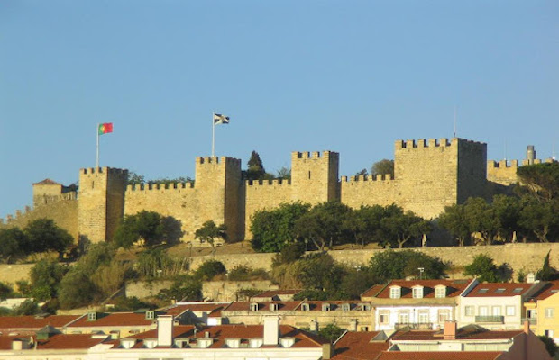
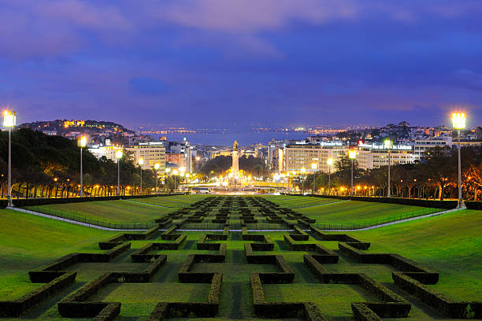
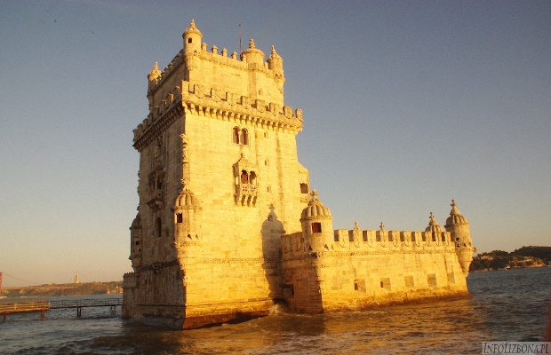
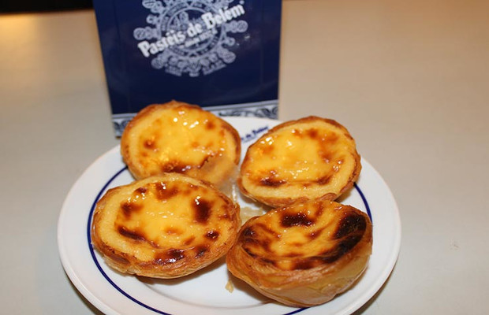
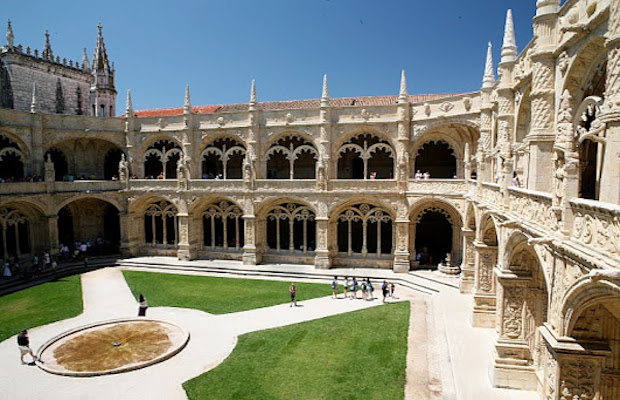
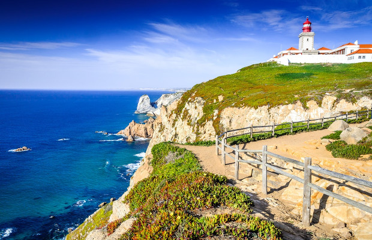
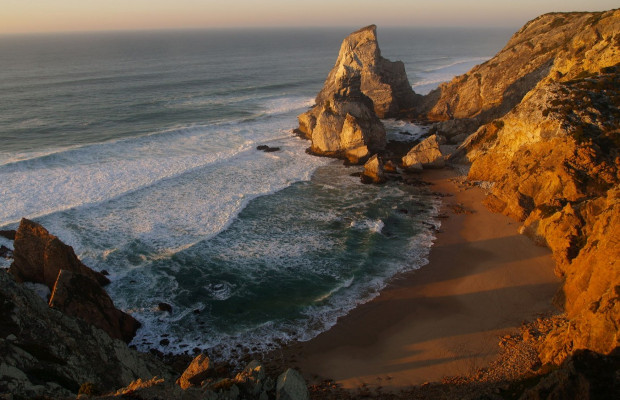

Lizbona
Lizbona, stolica Portugalii i największe miasto tego słonecznego oraz wysuniętego na zachód kraju. Wyjazd do Lizbony w przeszłości był albo kosztowny,
albo wymagał większego sprytu podczas szukania połączeń łączonych. Na szczęście taka sytuacja jest już historią i dziś dzięki tanim liniom możemy dolecieć tam bez większych problemów i w rozsądnej cenie.
Zamek świętego Jerzego

Zamek Świętego Jerzego (Castelo de São Jorge) położony jest w starej dzielnicy Lizbony – Alfamie. Wybudowany został w X wieku przez Maurów i był pod ich panowaniem aż do roku 1147 gdy Lizbona wraz z pobliskimi fortyfikacjami została podbita przez pierwszego króla Portugalii Afonso’a Henriques’a podczas drugiej krucjaty. Z obwarowań rozprzestrzenia się bajeczny widok na całe stare miasto, rynek, a nawet, jeżeli trafi się na przejrzyste niebo obok rzeki (gdy nie paruje), można zobaczyć wieżę Bellem skąd Vasco da Gama wyruszał w odkrywaniu nieznanych lądów
Park Edwarda VII

Obok urokliwego ogrodu Amália Rodrigues znajduje się jeden z bardziej rozległych parków w Lizbonie, a także jeden z najbardziej kultowych! Dla osób odwiedzających Lizbonę, naprawdę trudno nie natknąć się na Parque Eduardo VII, ponieważ jest to swego rodzaju przedłużenie ruchliwej Avenida da Liberdade, w samym sercu miasta.
Wieża Belem

Wieża Belem niegdyś strażnik portu w Lizbonie i symbol potęgi miasta, obecnie niezwykły punkt widokowy i wizytówka całej Portugalii. Wieża Belém została wzniesiona blisko ujścia rzeki Tag na początku XVI wieku. Pełniła funkcję więzienia, później posterunku celnego oraz latarni morskiej.
Przysmak Lizbony

Babeczki Pasteis de Belem (nazywane również Pasteis de Nata), to najpopularniejszy portugalski deser, który jest znany nie tylko w Lizbonie, ale w całej Portugalii i wszędzie tam, gdzie są Portugalczycy. To właśnie w dzielnicy Belem narodziły się te słynne ciasteczka/babeczki, a fabryka je produkująca, ulokowana jest tuż obok Klasztoru Hieronimitów, i sprzedaje ciasteczka Pasteis de Belem od 1837 roku.
Klasztor Hieronimitów

Klasztor Hieronimitów (Jeronimos) to perełka stylu manuelińskiego oraz jedno z najpiękniejszych miejsc w Lizbonie. Jednym z głównych i robiących największe wrażenie zabytków w Lizbonie jest przepiękny klasztor Hieronimitów w Belem. Budowa rozpoczęta w 1501 roku przez króla Manuela I Szczęśliwego i finansowana z bogactw napływających do Portugalii z jej zamorskich posiadłości, monaster ten pozostaje jednym z cudowniejszych przykładów stylu manuelińskiego w architekturze.
Cabo da Roca

Cabo da Roca to dziki i surowy przylądek, stanowiący najdalej wysunięty na zachód punkt stałego lądu Europy. Aż do późniego XIV wieku wierzono, że te smagane wiatrem klify Cabo da Roca są krańcem świata. Do niezwykłej atmosfery panującej w tym miejscu przyczynia się także otaczający półwysep opustoszały, dziki krajobraz, a także wzburzone fale, uderzające o podnóża klifów tuż przy trudnym szlaku biegnącym po położonych na wybrzeżu ścieżkach.
Plaia da Ursa

Praia da Ursa, czyli Plaża Niedźwiedzia w Sintrze, obok przylądka Cabo da Roca, to swoista plaża marzeń. Plaża Ursa to dzika plaża, bez tłumów turystów, hałasu, infrastruktury turystycznej, a z przepięknymi formacjami skalnymi i złotym piaskiem.
Plaża Ursa otoczona jest przez wysokie klify i stromo opadające skały, a z dwóch stron dodatkowo znajdują się bajkowe formacje skalne nazywany Giganami z Ursa. To właśnie dzięki jednej ze skał, która ma przypominać niedźwiedzia plaża, zawdzięcza swoja nazwą – Plaża Niedźwiedzia.
Miejsce, w którym wizyta na zachód słońca długo zapada w pamięć.
Jest ona zlokalizowana na terenie Parku Naturalnego Sintra-Cascais (Parque Natural de Sintra-Cascais) bardzo blisko słynnego przylądka Cabo da Roca, od którego plażę Ursa w linii prostej dzieli ok. 1,5 km.